F.7 Ceva and Menelaus — Folios¶
Archival manuscript scans and diplomatic transcriptions from seelig’s notebooks for F.7 (Ceva and Menelaus) (SeeligNotebooks).
Folio 0024 (Page 1 of 26): Gergonne Point Concurrency via Ceva’s Theorem (FWS 2011/11/07)¶

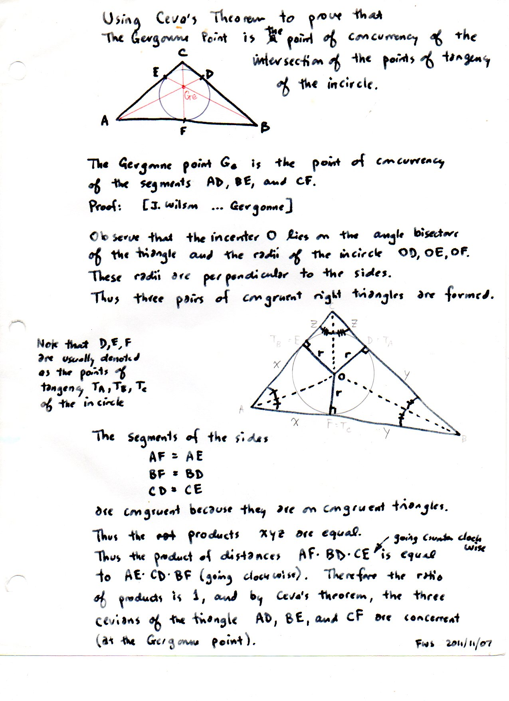
Folio 0024 (original scan 0024.jpg) from resources/seelig/07_ceva-and-menelaus.¶
Diplomatic Mathematical & Geometric Transcription
Diplomatic Transcription — Folio 0024 (0024.jpg, Sheet 1 of 26):
Proves that the cevians to the incircle touchpoints \(D=T_A, E=T_B, F=T_C\) concur at the Gergonne point \(G_e = X(7)\) using equal tangent lengths \(x, y, z\).
Editorial & Symbolic Notes
Archival scan 0024.jpg from Fred W. Seelig’s notebook dossier on F.7 Ceva and Menelaus (Page 1 of 26). Companion OpenDocument worksheet(s): Ceva & Menelaus, Ceva, Menelaus, Ceva Compare, 6-9-13 Cevian. Classical Euclidean foundations: VI.2. Kimberling Encyclopedia of Triangle Centers loci: X(1) — Incenter, X(2) — Centroid, X(7) — Gergonne Point, X(8) — Nagel Point.
Folio 0025 (Page 2 of 26): Ceva’s & Menelaus’ Theorem — Integer Segments¶

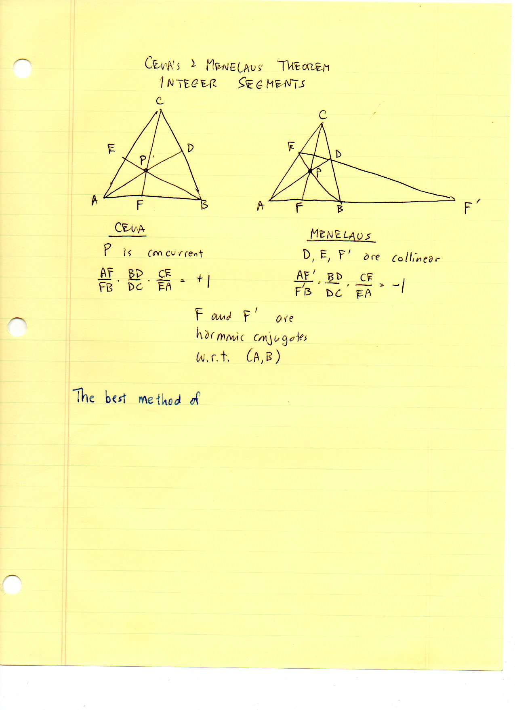
Folio 0025 (original scan 0025.jpg) from resources/seelig/07_ceva-and-menelaus.¶
Diplomatic Mathematical & Geometric Transcription
Diplomatic Transcription — Folio 0025 (0025.jpg, Sheet 2 of 26):
Side-by-side comparison of Ceva (\(+1\)) and Menelaus (\(-1\)) showing that \((A, B; F, F')\) form a harmonic range.
Editorial & Symbolic Notes
Archival scan 0025.jpg from Fred W. Seelig’s notebook dossier on F.7 Ceva and Menelaus (Page 2 of 26). Companion OpenDocument worksheet(s): Ceva & Menelaus, Ceva, Menelaus, Ceva Compare, 6-9-13 Cevian. Classical Euclidean foundations: VI.2. Kimberling Encyclopedia of Triangle Centers loci: X(1) — Incenter, X(2) — Centroid, X(7) — Gergonne Point, X(8) — Nagel Point.
Folio 0026 (Page 3 of 26): MNIJ Coordinate Framework for Integer Cevians¶

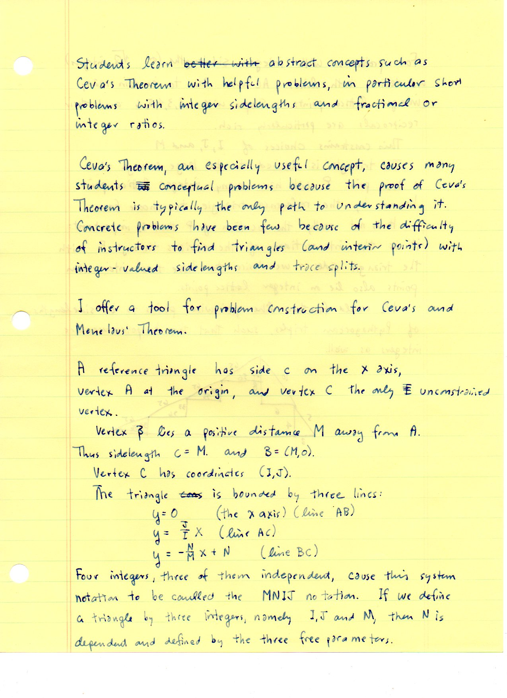
Folio 0026 (original scan 0026.jpg) from resources/seelig/07_ceva-and-menelaus.¶
Diplomatic Mathematical & Geometric Transcription
Diplomatic Transcription — Folio 0026 (0026.jpg, Sheet 3 of 26):
Places \(A=(0,0), B=(M,0), C=(I,J)\) with \(BC\) intercept \(N = JM/(M-I)\) to construct integer-segment Ceva configurations.
Editorial & Symbolic Notes
Archival scan 0026.jpg from Fred W. Seelig’s notebook dossier on F.7 Ceva and Menelaus (Page 3 of 26). Companion OpenDocument worksheet(s): Ceva & Menelaus, Ceva, Menelaus, Ceva Compare, 6-9-13 Cevian. Classical Euclidean foundations: VI.2. Kimberling Encyclopedia of Triangle Centers loci: X(1) — Incenter, X(2) — Centroid, X(7) — Gergonne Point, X(8) — Nagel Point.
Folio 0027 (Page 4 of 26): Pythagorean Triple Gluing Table¶

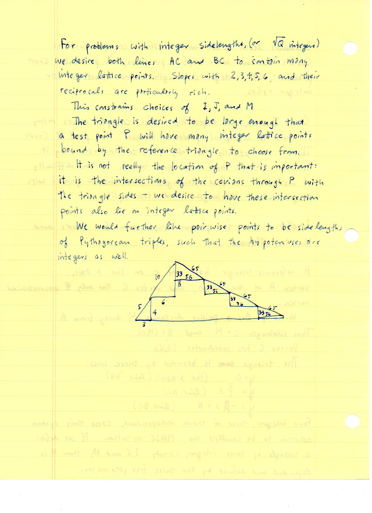
Folio 0027 (original scan 0027.jpg) from resources/seelig/07_ceva-and-menelaus.¶
Diplomatic Mathematical & Geometric Transcription
Diplomatic Transcription — Folio 0027 (0027.jpg, Sheet 4 of 26):
Tabulates scaled Pythagorean right triangles (\(3\text{–}4\text{–}5, 6\text{–}8\text{–}10, 33\text{–}56\text{–}65\)) sharing a common altitude \(J\).
Editorial & Symbolic Notes
Archival scan 0027.jpg from Fred W. Seelig’s notebook dossier on F.7 Ceva and Menelaus (Page 4 of 26). Companion OpenDocument worksheet(s): Ceva & Menelaus, Ceva, Menelaus, Ceva Compare, 6-9-13 Cevian. Classical Euclidean foundations: VI.2. Kimberling Encyclopedia of Triangle Centers loci: X(1) — Incenter, X(2) — Centroid, X(7) — Gergonne Point, X(8) — Nagel Point.
Folio 0028 (Page 5 of 26): Cut The Knot IMO Cevian Ratio Problem (FWS 2015/4/12)¶

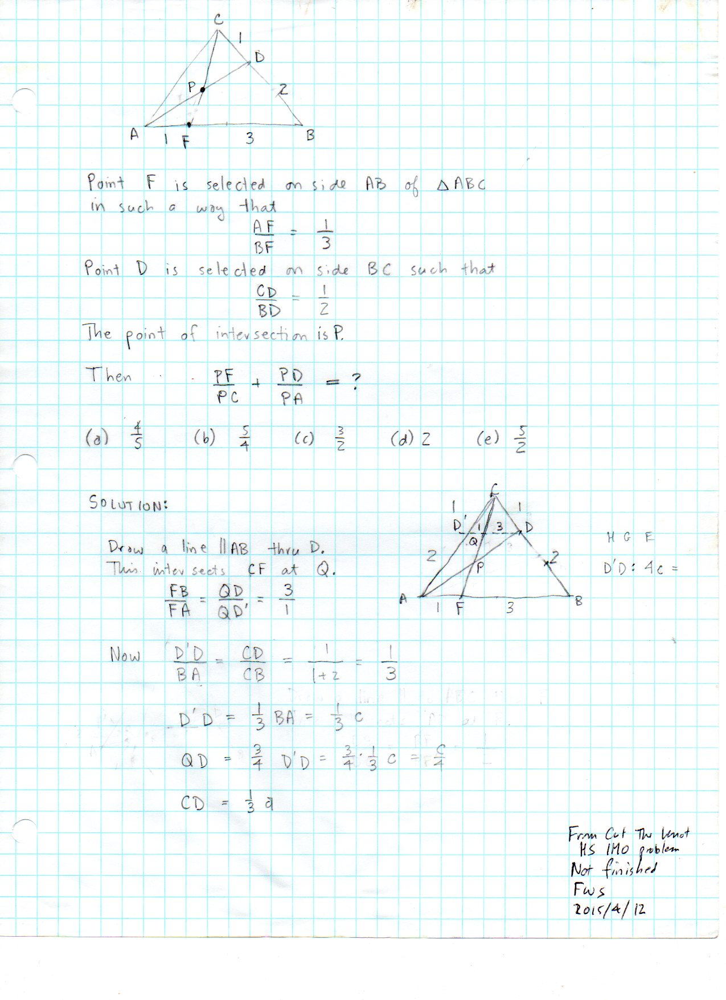
Folio 0028 (original scan 0028.jpg) from resources/seelig/07_ceva-and-menelaus.¶
Diplomatic Mathematical & Geometric Transcription
Diplomatic Transcription — Folio 0028 (0028.jpg, Sheet 5 of 26):
Uses parallel lines and similar triangles to evaluate \(PF/PC + PD/PA\) given \(AF/BF = 1/3\) and \(CD/BD = 1/2\).
Editorial & Symbolic Notes
Archival scan 0028.jpg from Fred W. Seelig’s notebook dossier on F.7 Ceva and Menelaus (Page 5 of 26). Companion OpenDocument worksheet(s): Ceva & Menelaus, Ceva, Menelaus, Ceva Compare, 6-9-13 Cevian. Classical Euclidean foundations: VI.2. Kimberling Encyclopedia of Triangle Centers loci: X(1) — Incenter, X(2) — Centroid, X(7) — Gergonne Point, X(8) — Nagel Point.
Folio 0029 (Page 6 of 26): Length of Cevian to Intouch Point¶

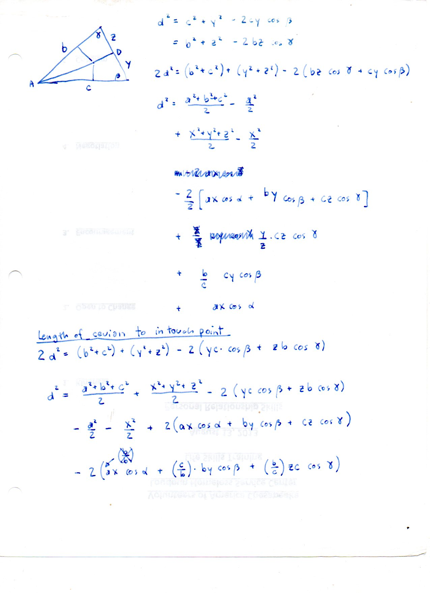
Folio 0029 (original scan 0029.jpg) from resources/seelig/07_ceva-and-menelaus.¶
Diplomatic Mathematical & Geometric Transcription
Diplomatic Transcription — Folio 0029 (0029.jpg, Sheet 6 of 26):
Applies the Law of Cosines to compute the cevian lengths from vertices to the incircle touchpoints.
Editorial & Symbolic Notes
Archival scan 0029.jpg from Fred W. Seelig’s notebook dossier on F.7 Ceva and Menelaus (Page 6 of 26). Companion OpenDocument worksheet(s): Ceva & Menelaus, Ceva, Menelaus, Ceva Compare, 6-9-13 Cevian. Classical Euclidean foundations: VI.2. Kimberling Encyclopedia of Triangle Centers loci: X(1) — Incenter, X(2) — Centroid, X(7) — Gergonne Point, X(8) — Nagel Point.
Folio 0030 (Page 7 of 26): Stewart’s Theorem for Cevians d, e, f¶

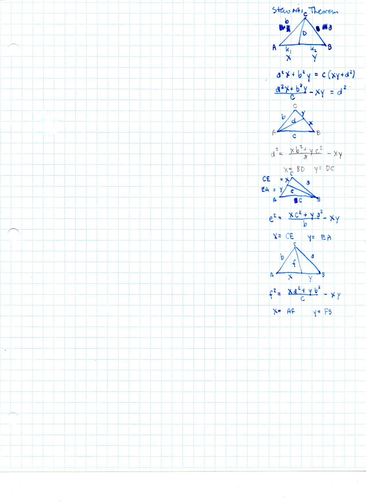
Folio 0030 (original scan 0030.jpg) from resources/seelig/07_ceva-and-menelaus.¶
Diplomatic Mathematical & Geometric Transcription
Diplomatic Transcription — Folio 0030 (0030.jpg, Sheet 7 of 26):
Derives \(d^2 = \frac{x b^2 + y c^2}{a} - xy\) for all three cevians in terms of side splits.
Editorial & Symbolic Notes
Archival scan 0030.jpg from Fred W. Seelig’s notebook dossier on F.7 Ceva and Menelaus (Page 7 of 26). Companion OpenDocument worksheet(s): Ceva & Menelaus, Ceva, Menelaus, Ceva Compare, 6-9-13 Cevian. Classical Euclidean foundations: VI.2. Kimberling Encyclopedia of Triangle Centers loci: X(1) — Incenter, X(2) — Centroid, X(7) — Gergonne Point, X(8) — Nagel Point.
Folio 0031 (Page 8 of 26): Lattice Triangle Example (I=8, J=8, M=24, P=(12,4))¶

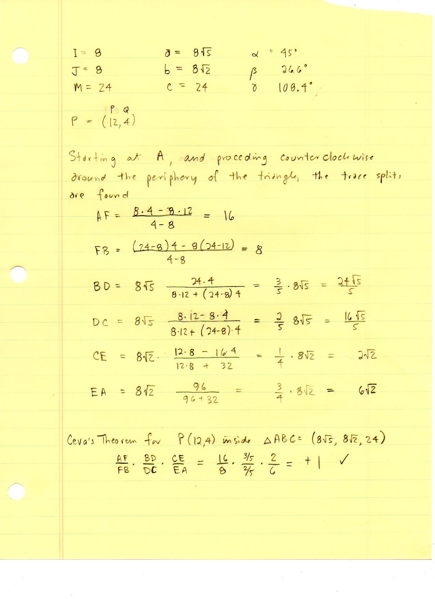
Folio 0031 (original scan 0031.jpg) from resources/seelig/07_ceva-and-menelaus.¶
Diplomatic Mathematical & Geometric Transcription
Diplomatic Transcription — Folio 0031 (0031.jpg, Sheet 8 of 26):
Computes exact trace coordinates \(D, E, F\) and verifies Ceva’s product \(\frac{16}{8}\cdot\frac{3/5}{2/5}\cdot\frac{2}{6} = +1\).
Editorial & Symbolic Notes
Archival scan 0031.jpg from Fred W. Seelig’s notebook dossier on F.7 Ceva and Menelaus (Page 8 of 26). Companion OpenDocument worksheet(s): Ceva & Menelaus, Ceva, Menelaus, Ceva Compare, 6-9-13 Cevian. Classical Euclidean foundations: VI.2. Kimberling Encyclopedia of Triangle Centers loci: X(1) — Incenter, X(2) — Centroid, X(7) — Gergonne Point, X(8) — Nagel Point.
Folio 0032 (Page 9 of 26): Heronian 78-90-84 Triangle Problem (Facebook, April 14, 2015)¶

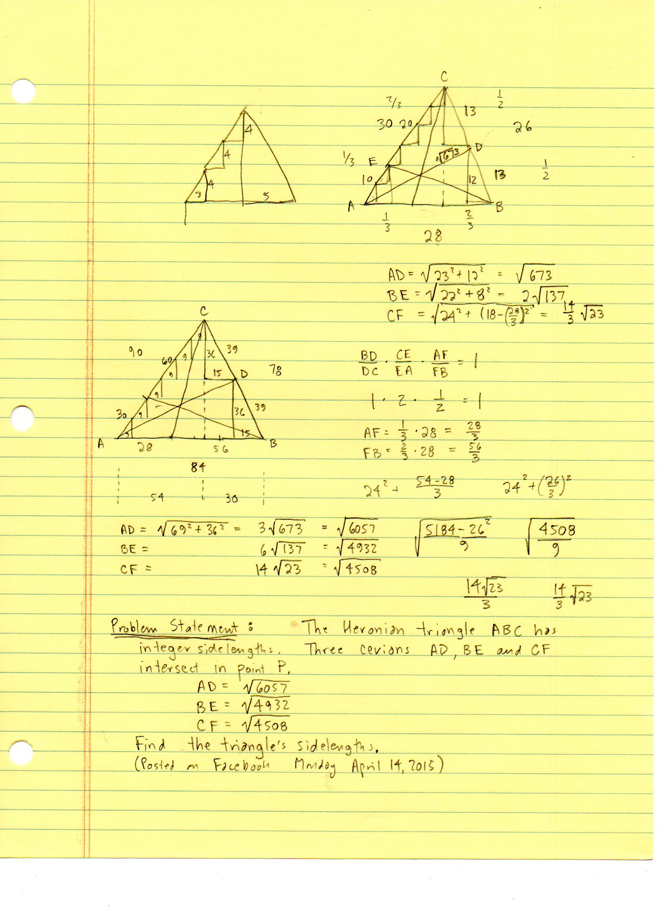
Folio 0032 (original scan 0032.jpg) from resources/seelig/07_ceva-and-menelaus.¶
Diplomatic Mathematical & Geometric Transcription
Diplomatic Transcription — Folio 0032 (0032.jpg, Sheet 9 of 26):
Constructs the \(78\text{–}90\text{–}84\) Heronian triangle with trace splits \((28,56), (39,39), (60,30)\) and exact cevian lengths \(3\sqrt{673}, 6\sqrt{137}, 14\sqrt{23}\).
Editorial & Symbolic Notes
Archival scan 0032.jpg from Fred W. Seelig’s notebook dossier on F.7 Ceva and Menelaus (Page 9 of 26). Companion OpenDocument worksheet(s): Ceva & Menelaus, Ceva, Menelaus, Ceva Compare, 6-9-13 Cevian. Classical Euclidean foundations: VI.2. Kimberling Encyclopedia of Triangle Centers loci: X(1) — Incenter, X(2) — Centroid, X(7) — Gergonne Point, X(8) — Nagel Point.
Folio 0033 (Page 10 of 26): Continuation of Heronian Cevian Calculations¶

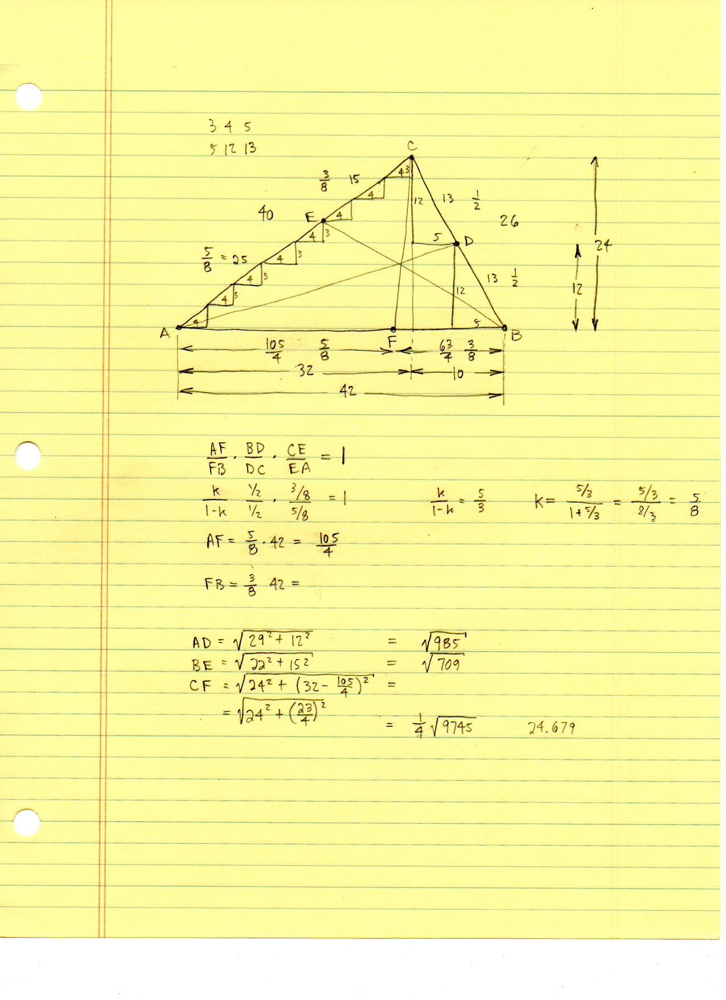
Folio 0033 (original scan 0033.jpg) from resources/seelig/07_ceva-and-menelaus.¶
Diplomatic Mathematical & Geometric Transcription
Diplomatic Transcription — Folio 0033 (0033.jpg, Sheet 10 of 26):
Completes the Stewart’s theorem verification for \(AD, BE, CF\) on the \(78\text{–}90\text{–}84\) triangle.
Editorial & Symbolic Notes
Archival scan 0033.jpg from Fred W. Seelig’s notebook dossier on F.7 Ceva and Menelaus (Page 10 of 26). Companion OpenDocument worksheet(s): Ceva & Menelaus, Ceva, Menelaus, Ceva Compare, 6-9-13 Cevian. Classical Euclidean foundations: VI.2. Kimberling Encyclopedia of Triangle Centers loci: X(1) — Incenter, X(2) — Centroid, X(7) — Gergonne Point, X(8) — Nagel Point.
Folio 0034 (Page 11 of 26): Cevian Triangle DEF Side Lengths & Area in Trilinears¶

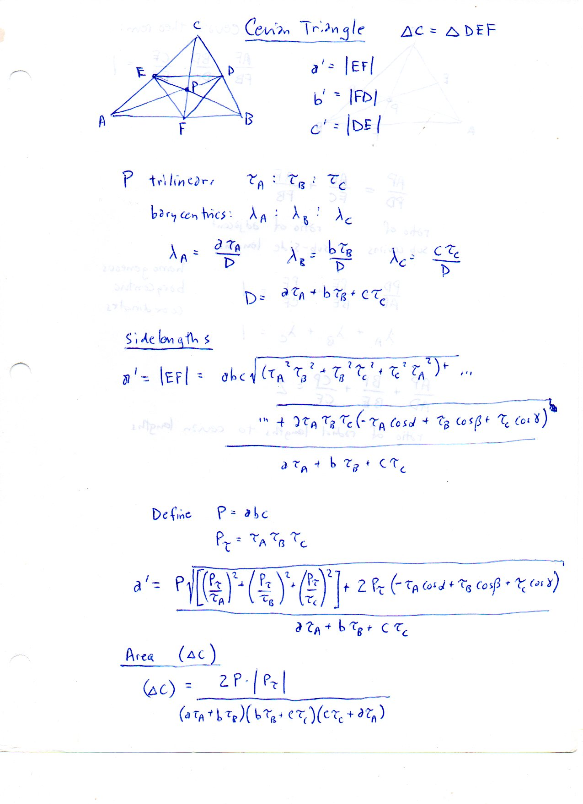
Folio 0034 (original scan 0034.jpg) from resources/seelig/07_ceva-and-menelaus.¶
Diplomatic Mathematical & Geometric Transcription
Diplomatic Transcription — Folio 0034 (0034.jpg, Sheet 11 of 26):
Records exact formulas for \(|EF|, |FD|, |DE|\) and \(\text{Area}(\triangle DEF)\) in trilinear coordinates \(\tau_A : \tau_B : \tau_C\).
Editorial & Symbolic Notes
Archival scan 0034.jpg from Fred W. Seelig’s notebook dossier on F.7 Ceva and Menelaus (Page 11 of 26). Companion OpenDocument worksheet(s): Ceva & Menelaus, Ceva, Menelaus, Ceva Compare, 6-9-13 Cevian. Classical Euclidean foundations: VI.2. Kimberling Encyclopedia of Triangle Centers loci: X(1) — Incenter, X(2) — Centroid, X(7) — Gergonne Point, X(8) — Nagel Point.
Folio 0035 (Page 12 of 26): Sub-Cevian Harmonic & Barycentric Identities¶

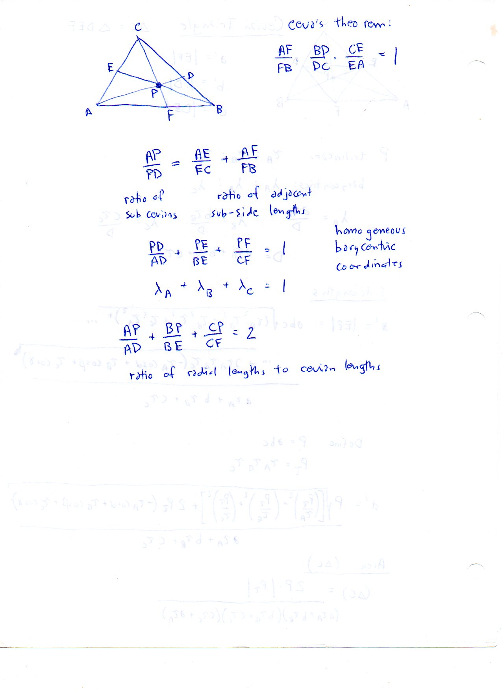
Folio 0035 (original scan 0035.jpg) from resources/seelig/07_ceva-and-menelaus.¶
Diplomatic Mathematical & Geometric Transcription
Diplomatic Transcription — Folio 0035 (0035.jpg, Sheet 12 of 26):
Proves \(\frac{AP}{PD} = \frac{AE}{EC} + \frac{AF}{FB}\), \(\sum \frac{PD}{AD} = 1\), and \(\sum \frac{AP}{AD} = 2\).
Editorial & Symbolic Notes
Archival scan 0035.jpg from Fred W. Seelig’s notebook dossier on F.7 Ceva and Menelaus (Page 12 of 26). Companion OpenDocument worksheet(s): Ceva & Menelaus, Ceva, Menelaus, Ceva Compare, 6-9-13 Cevian. Classical Euclidean foundations: VI.2. Kimberling Encyclopedia of Triangle Centers loci: X(1) — Incenter, X(2) — Centroid, X(7) — Gergonne Point, X(8) — Nagel Point.
Folio 0036 (Page 13 of 26): MNIJ Line Equations L_A, L_B, L_C, L_D, L_E, L_F¶

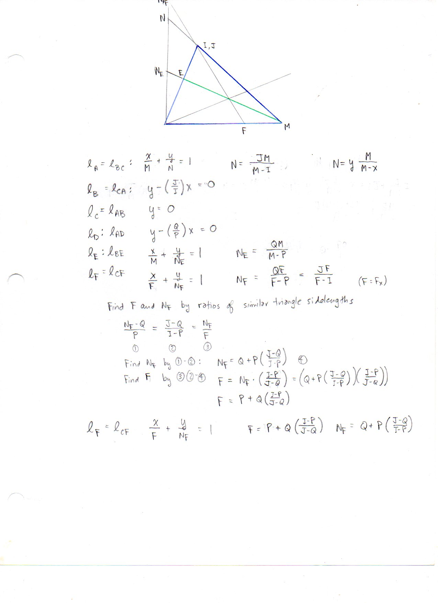
Folio 0036 (original scan 0036.jpg) from resources/seelig/07_ceva-and-menelaus.¶
Diplomatic Mathematical & Geometric Transcription
Diplomatic Transcription — Folio 0036 (0036.jpg, Sheet 13 of 26):
Derives intercept equations for the three sidelines and three cevians through \(P(P, Q)\).
Editorial & Symbolic Notes
Archival scan 0036.jpg from Fred W. Seelig’s notebook dossier on F.7 Ceva and Menelaus (Page 13 of 26). Companion OpenDocument worksheet(s): Ceva & Menelaus, Ceva, Menelaus, Ceva Compare, 6-9-13 Cevian. Classical Euclidean foundations: VI.2. Kimberling Encyclopedia of Triangle Centers loci: X(1) — Incenter, X(2) — Centroid, X(7) — Gergonne Point, X(8) — Nagel Point.
Folio 0037 (Page 14 of 26): Exact Cartesian Coordinates of Traces D, E, F¶

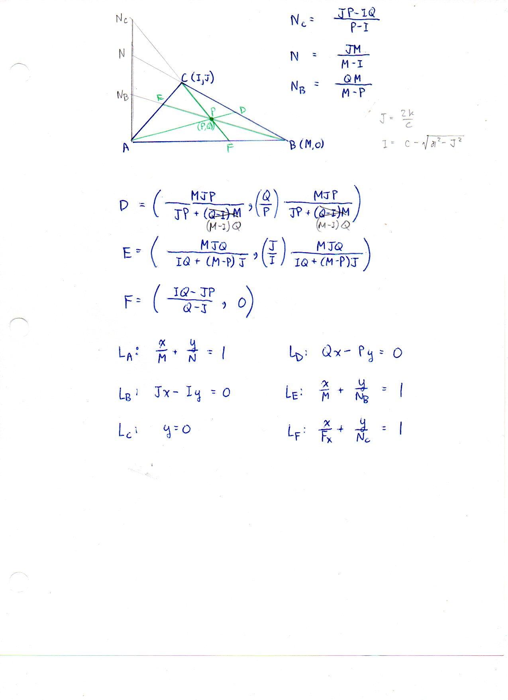
Folio 0037 (original scan 0037.jpg) from resources/seelig/07_ceva-and-menelaus.¶
Diplomatic Mathematical & Geometric Transcription
Diplomatic Transcription — Folio 0037 (0037.jpg, Sheet 14 of 26):
Solves the \(2\times 2\) linear intersections for \(D = L_D \cap L_A\), \(E = L_E \cap L_B\), and \(F = L_F \cap L_C\).
Editorial & Symbolic Notes
Archival scan 0037.jpg from Fred W. Seelig’s notebook dossier on F.7 Ceva and Menelaus (Page 14 of 26). Companion OpenDocument worksheet(s): Ceva & Menelaus, Ceva, Menelaus, Ceva Compare, 6-9-13 Cevian. Classical Euclidean foundations: VI.2. Kimberling Encyclopedia of Triangle Centers loci: X(1) — Incenter, X(2) — Centroid, X(7) — Gergonne Point, X(8) — Nagel Point.
Folio 0038 (Page 15 of 26): Cevian Lengths d, e, f in MNIJ Coordinates¶

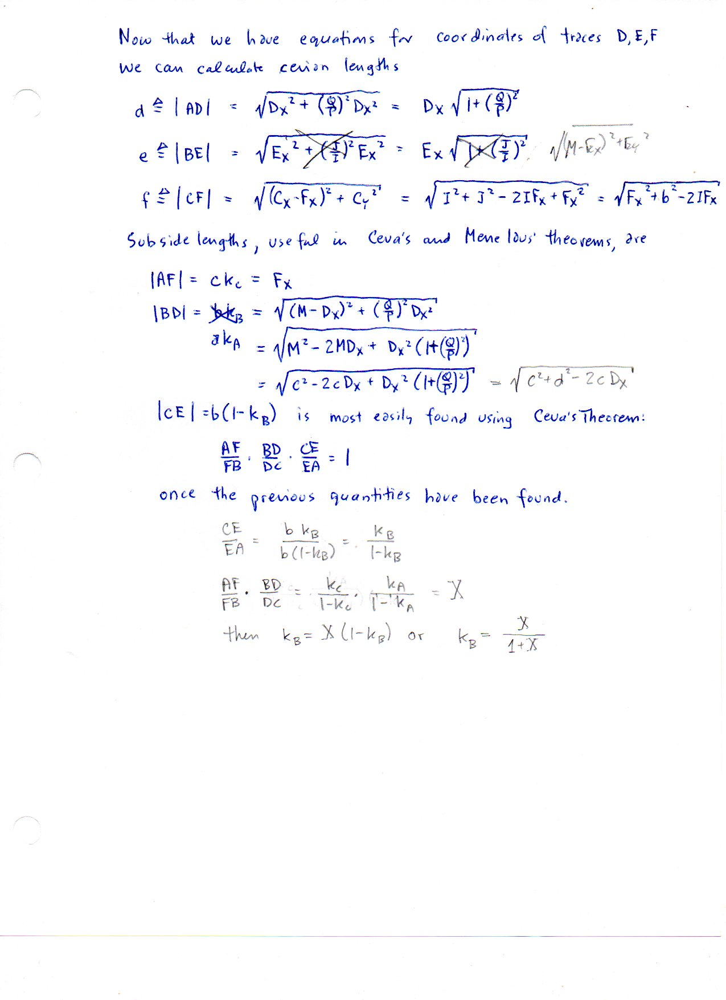
Folio 0038 (original scan 0038.jpg) from resources/seelig/07_ceva-and-menelaus.¶
Diplomatic Mathematical & Geometric Transcription
Diplomatic Transcription — Folio 0038 (0038.jpg, Sheet 15 of 26):
Expresses \(d = |AD|, e = |BE|, f = |CF|\) and vertex distances \(d_A, d_B, d_C\) in terms of \(M, N, I, J, P, Q\).
Editorial & Symbolic Notes
Archival scan 0038.jpg from Fred W. Seelig’s notebook dossier on F.7 Ceva and Menelaus (Page 15 of 26). Companion OpenDocument worksheet(s): Ceva & Menelaus, Ceva, Menelaus, Ceva Compare, 6-9-13 Cevian. Classical Euclidean foundations: VI.2. Kimberling Encyclopedia of Triangle Centers loci: X(1) — Incenter, X(2) — Centroid, X(7) — Gergonne Point, X(8) — Nagel Point.
Folio 0039 (Page 16 of 26): Subtriangle Areas & Side Splits¶

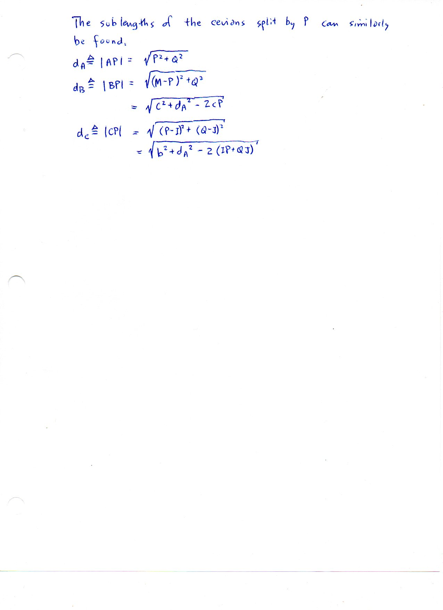
Folio 0039 (original scan 0039.jpg) from resources/seelig/07_ceva-and-menelaus.¶
Diplomatic Mathematical & Geometric Transcription
Diplomatic Transcription — Folio 0039 (0039.jpg, Sheet 16 of 26):
Computes the six side segments and six subtriangle areas around interior point \(P\).
Editorial & Symbolic Notes
Archival scan 0039.jpg from Fred W. Seelig’s notebook dossier on F.7 Ceva and Menelaus (Page 16 of 26). Companion OpenDocument worksheet(s): Ceva & Menelaus, Ceva, Menelaus, Ceva Compare, 6-9-13 Cevian. Classical Euclidean foundations: VI.2. Kimberling Encyclopedia of Triangle Centers loci: X(1) — Incenter, X(2) — Centroid, X(7) — Gergonne Point, X(8) — Nagel Point.
Folio 0040 (Page 17 of 26): Summary of MNIJ Cevian Formulas¶

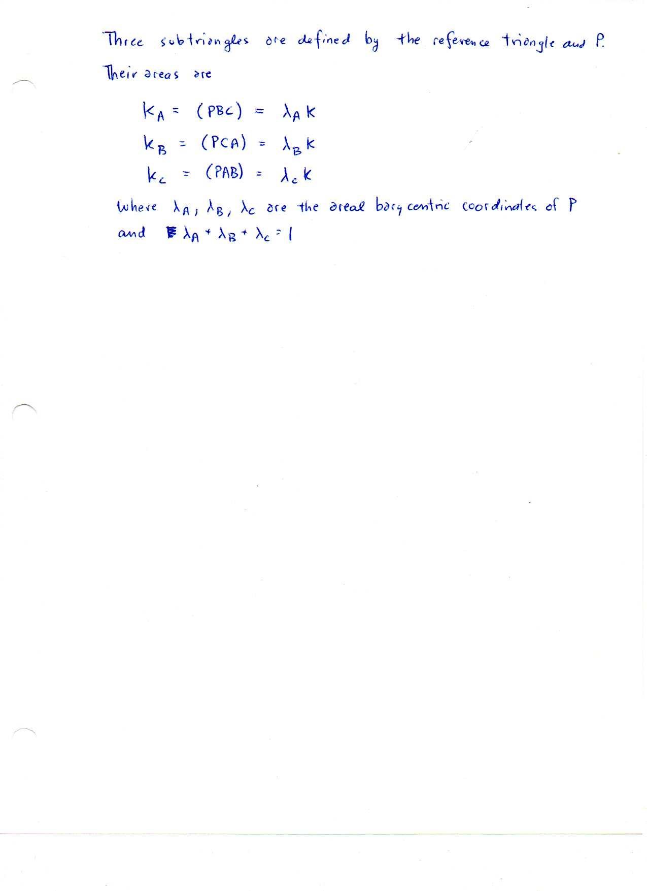
Folio 0040 (original scan 0040.jpg) from resources/seelig/07_ceva-and-menelaus.¶
Diplomatic Mathematical & Geometric Transcription
Diplomatic Transcription — Folio 0040 (0040.jpg, Sheet 17 of 26):
Consolidates trace coordinates, lengths, and Ceva ratio checks onto a reference sheet.
Editorial & Symbolic Notes
Archival scan 0040.jpg from Fred W. Seelig’s notebook dossier on F.7 Ceva and Menelaus (Page 17 of 26). Companion OpenDocument worksheet(s): Ceva & Menelaus, Ceva, Menelaus, Ceva Compare, 6-9-13 Cevian. Classical Euclidean foundations: VI.2. Kimberling Encyclopedia of Triangle Centers loci: X(1) — Incenter, X(2) — Centroid, X(7) — Gergonne Point, X(8) — Nagel Point.
Folio 0041 (Page 18 of 26): Cevian HP-35s Program Specification (1/, FWS 8/25/2014)¶

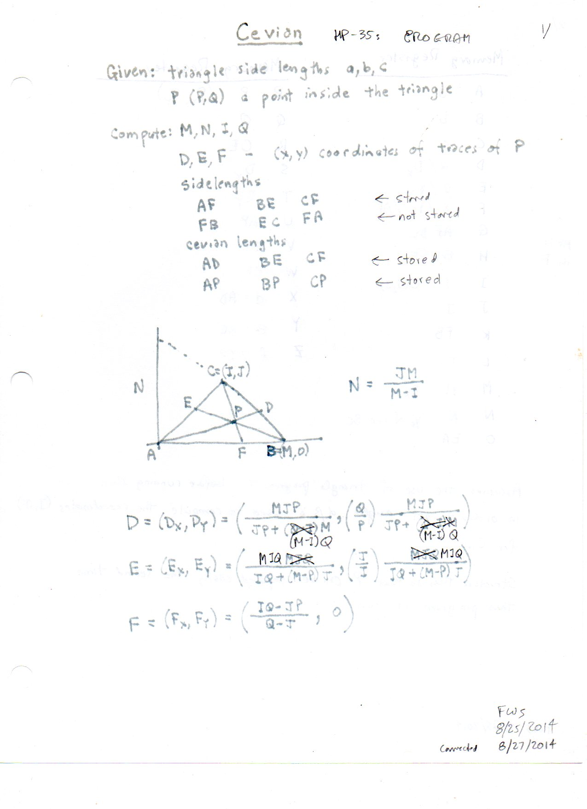
Folio 0041 (original scan 0041.jpg) from resources/seelig/07_ceva-and-menelaus.¶
Diplomatic Mathematical & Geometric Transcription
Diplomatic Transcription — Folio 0041 (0041.jpg, Sheet 18 of 26):
Defines inputs, outputs, and equations for the HP-35s calculator program solving general cevians.
Editorial & Symbolic Notes
Archival scan 0041.jpg from Fred W. Seelig’s notebook dossier on F.7 Ceva and Menelaus (Page 18 of 26). Companion OpenDocument worksheet(s): Ceva & Menelaus, Ceva, Menelaus, Ceva Compare, 6-9-13 Cevian. Classical Euclidean foundations: VI.2. Kimberling Encyclopedia of Triangle Centers loci: X(1) — Incenter, X(2) — Centroid, X(7) — Gergonne Point, X(8) — Nagel Point.
Folio 0042 (Page 19 of 26): HP-35s Memory Register Map A–Z (2/, FWS 8/25/2014)¶

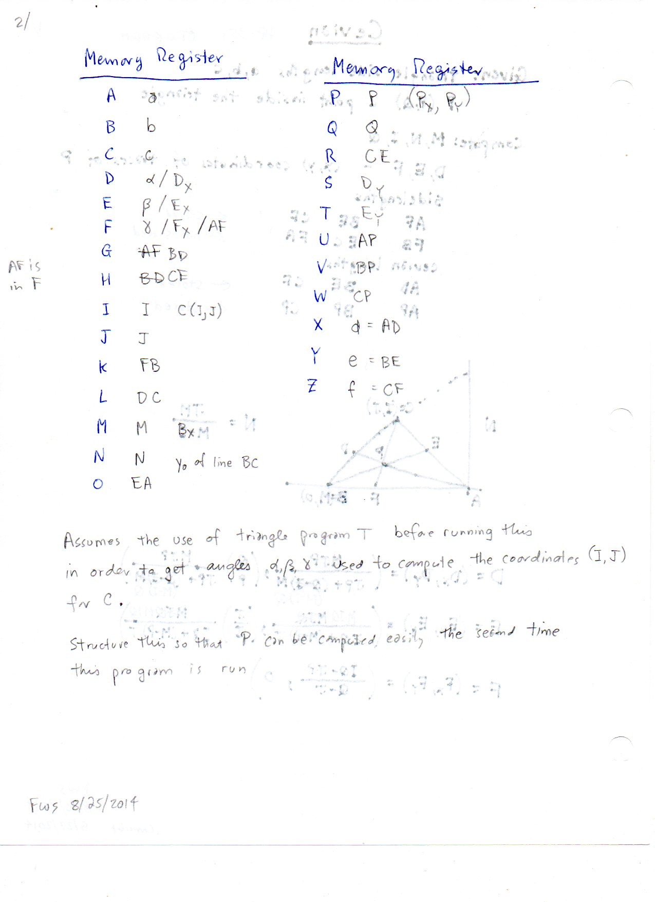
Folio 0042 (original scan 0042.jpg) from resources/seelig/07_ceva-and-menelaus.¶
Diplomatic Mathematical & Geometric Transcription
Diplomatic Transcription — Folio 0042 (0042.jpg, Sheet 19 of 26):
Maps all 26 calculator registers A–Z to triangle and cevian parameters.
Editorial & Symbolic Notes
Archival scan 0042.jpg from Fred W. Seelig’s notebook dossier on F.7 Ceva and Menelaus (Page 19 of 26). Companion OpenDocument worksheet(s): Ceva & Menelaus, Ceva, Menelaus, Ceva Compare, 6-9-13 Cevian. Classical Euclidean foundations: VI.2. Kimberling Encyclopedia of Triangle Centers loci: X(1) — Incenter, X(2) — Centroid, X(7) — Gergonne Point, X(8) — Nagel Point.
Folio 0043 (Page 20 of 26): HP-35s Program Flow Diagram (3/)¶

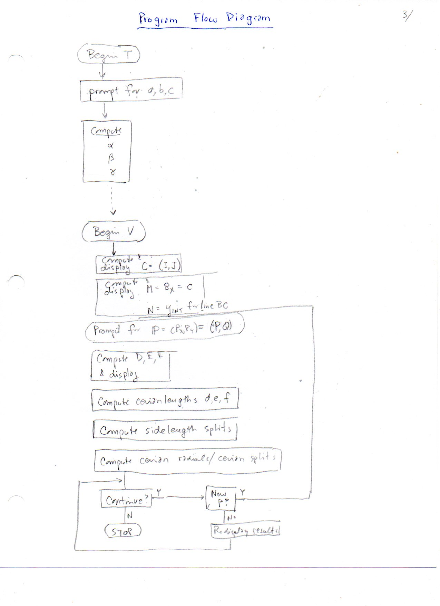
Folio 0043 (original scan 0043.jpg) from resources/seelig/07_ceva-and-menelaus.¶
Diplomatic Mathematical & Geometric Transcription
Diplomatic Transcription — Folio 0043 (0043.jpg, Sheet 20 of 26):
Flowchart of subroutine branches for computing trace points and cevian lengths.
Editorial & Symbolic Notes
Archival scan 0043.jpg from Fred W. Seelig’s notebook dossier on F.7 Ceva and Menelaus (Page 20 of 26). Companion OpenDocument worksheet(s): Ceva & Menelaus, Ceva, Menelaus, Ceva Compare, 6-9-13 Cevian. Classical Euclidean foundations: VI.2. Kimberling Encyclopedia of Triangle Centers loci: X(1) — Incenter, X(2) — Centroid, X(7) — Gergonne Point, X(8) — Nagel Point.
Folio 0044 (Page 21 of 26): Worked Test Case: 6-9-13 Triangle with P=(9,1) (Part 1)¶

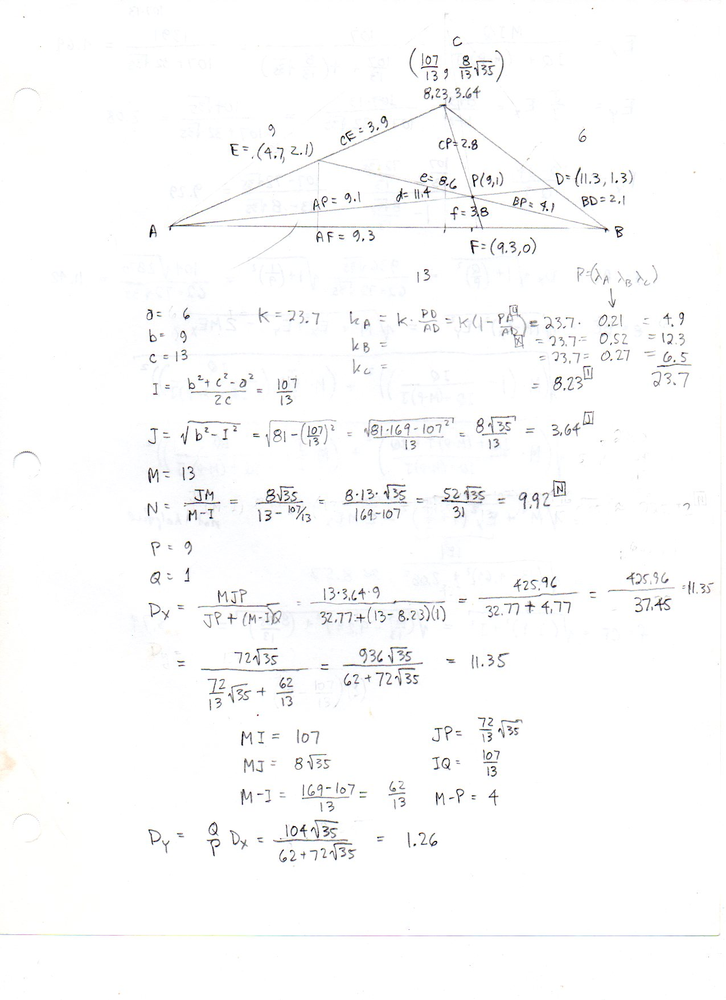
Folio 0044 (original scan 0044.jpg) from resources/seelig/07_ceva-and-menelaus.¶
Diplomatic Mathematical & Geometric Transcription
Diplomatic Transcription — Folio 0044 (0044.jpg, Sheet 21 of 26):
Evaluates \(I = 107/13 \approx 8.23, J = 8\sqrt{35}/13 \approx 3.64, N \approx 9.92\), and trace coordinates \(D(11.35, 1.26), E(4.69, 2.08), F(9.29, 0)\).
Editorial & Symbolic Notes
Archival scan 0044.jpg from Fred W. Seelig’s notebook dossier on F.7 Ceva and Menelaus (Page 21 of 26). Companion OpenDocument worksheet(s): Ceva & Menelaus, Ceva, Menelaus, Ceva Compare, 6-9-13 Cevian. Classical Euclidean foundations: VI.2. Kimberling Encyclopedia of Triangle Centers loci: X(1) — Incenter, X(2) — Centroid, X(7) — Gergonne Point, X(8) — Nagel Point.
Folio 0045 (Page 22 of 26): Worked Test Case: 6-9-13 Triangle (Part 2)¶

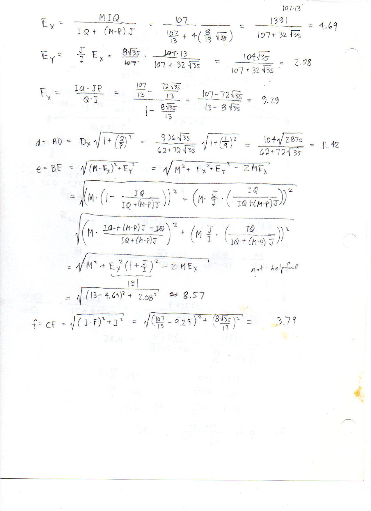
Folio 0045 (original scan 0045.jpg) from resources/seelig/07_ceva-and-menelaus.¶
Diplomatic Mathematical & Geometric Transcription
Diplomatic Transcription — Folio 0045 (0045.jpg, Sheet 22 of 26):
Computes cevian lengths \(d = 11.42, e = 8.57, f = 3.79\) and verifies Ceva’s theorem.
Editorial & Symbolic Notes
Archival scan 0045.jpg from Fred W. Seelig’s notebook dossier on F.7 Ceva and Menelaus (Page 22 of 26). Companion OpenDocument worksheet(s): Ceva & Menelaus, Ceva, Menelaus, Ceva Compare, 6-9-13 Cevian. Classical Euclidean foundations: VI.2. Kimberling Encyclopedia of Triangle Centers loci: X(1) — Incenter, X(2) — Centroid, X(7) — Gergonne Point, X(8) — Nagel Point.
Folio 0046 (Page 23 of 26): Worked Test Case: 6-9-13 Triangle (Part 3)¶

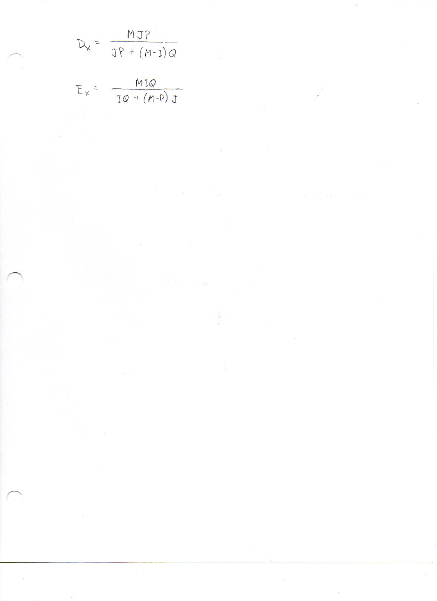
Folio 0046 (original scan 0046.jpg) from resources/seelig/07_ceva-and-menelaus.¶
Diplomatic Mathematical & Geometric Transcription
Diplomatic Transcription — Folio 0046 (0046.jpg, Sheet 23 of 26):
Cross-checks sub-cevian ratios and subtriangle areas against the Excel workbook.
Editorial & Symbolic Notes
Archival scan 0046.jpg from Fred W. Seelig’s notebook dossier on F.7 Ceva and Menelaus (Page 23 of 26). Companion OpenDocument worksheet(s): Ceva & Menelaus, Ceva, Menelaus, Ceva Compare, 6-9-13 Cevian. Classical Euclidean foundations: VI.2. Kimberling Encyclopedia of Triangle Centers loci: X(1) — Incenter, X(2) — Centroid, X(7) — Gergonne Point, X(8) — Nagel Point.
Folio 0047 (Page 24 of 26): Menelaus Worked Example on 20-23-31 Triangle¶

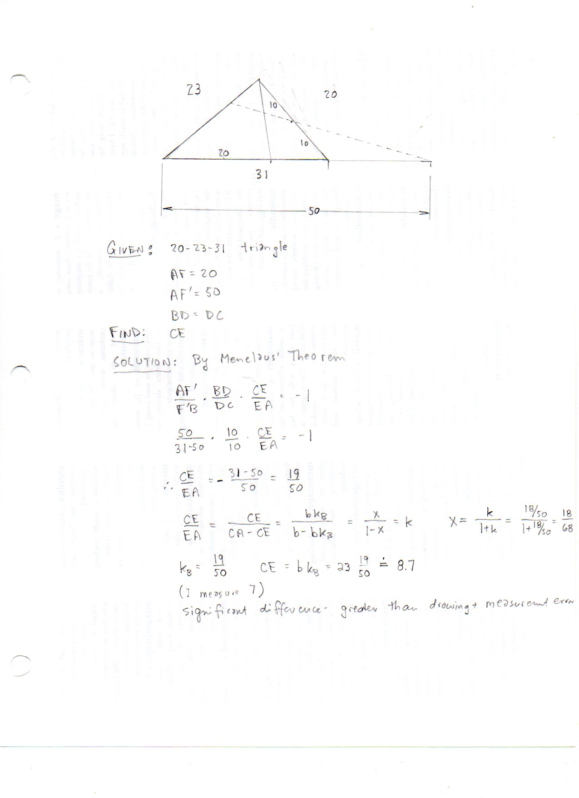
Folio 0047 (original scan 0047.jpg) from resources/seelig/07_ceva-and-menelaus.¶
Diplomatic Mathematical & Geometric Transcription
Diplomatic Transcription — Folio 0047 (0047.jpg, Sheet 24 of 26):
Given \(AF = 20, AF' = 50, BD = DC = 10\), solves Menelaus’s relation for \(CE/EA = 19/50\) (\(CE \approx 8.74\)).
Editorial & Symbolic Notes
Archival scan 0047.jpg from Fred W. Seelig’s notebook dossier on F.7 Ceva and Menelaus (Page 24 of 26). Companion OpenDocument worksheet(s): Ceva & Menelaus, Ceva, Menelaus, Ceva Compare, 6-9-13 Cevian. Classical Euclidean foundations: VI.2. Kimberling Encyclopedia of Triangle Centers loci: X(1) — Incenter, X(2) — Centroid, X(7) — Gergonne Point, X(8) — Nagel Point.
Folio 0048 (Page 25 of 26): Circumcircles of Subtriangles APB, BPC, CPA¶

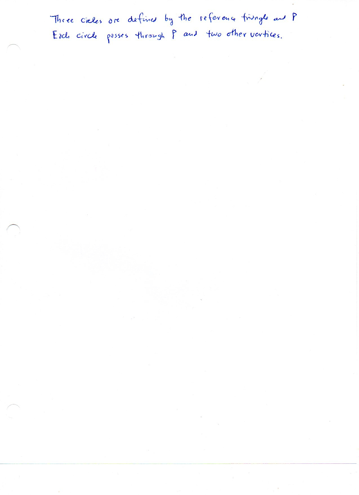
Folio 0048 (original scan 0048.jpg) from resources/seelig/07_ceva-and-menelaus.¶
Diplomatic Mathematical & Geometric Transcription
Diplomatic Transcription — Folio 0048 (0048.jpg, Sheet 25 of 26):
Notes properties of the three circles passing through \(P\) and pairs of triangle vertices.
Editorial & Symbolic Notes
Archival scan 0048.jpg from Fred W. Seelig’s notebook dossier on F.7 Ceva and Menelaus (Page 25 of 26). Companion OpenDocument worksheet(s): Ceva & Menelaus, Ceva, Menelaus, Ceva Compare, 6-9-13 Cevian. Classical Euclidean foundations: VI.2. Kimberling Encyclopedia of Triangle Centers loci: X(1) — Incenter, X(2) — Centroid, X(7) — Gergonne Point, X(8) — Nagel Point.
Folio 0049 (Page 26 of 26): Master Summary Sheet (Vol. 1, p. 128 & cevian analysis.xls)¶

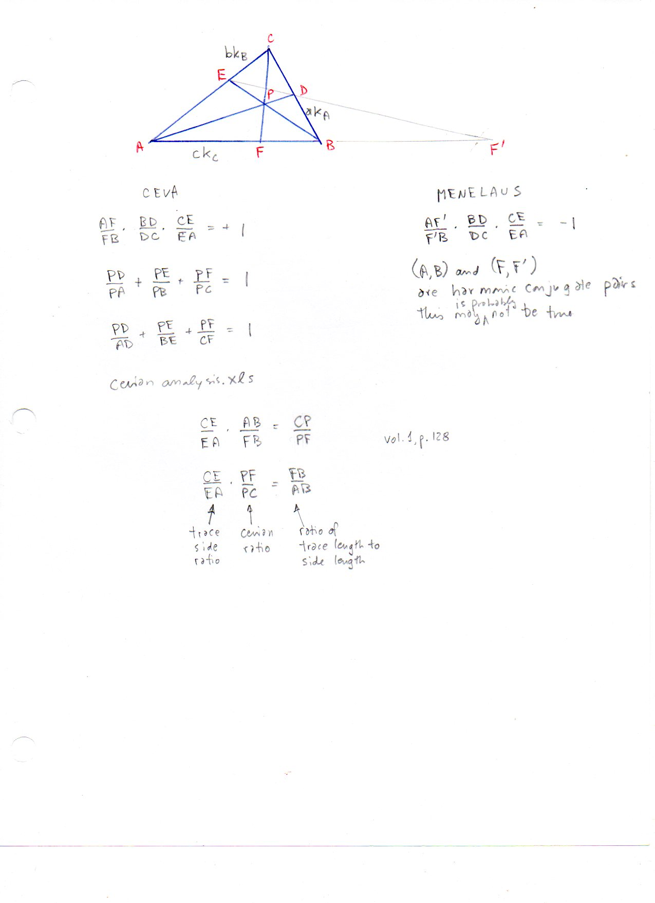
Folio 0049 (original scan 0049.jpg) from resources/seelig/07_ceva-and-menelaus.¶
Diplomatic Mathematical & Geometric Transcription
Diplomatic Transcription — Folio 0049 (0049.jpg, Sheet 26 of 26):
Compiles Ceva, Menelaus, Van Aubel, and mass-point identities linked to cevian analysis.xls.
Editorial & Symbolic Notes
Archival scan 0049.jpg from Fred W. Seelig’s notebook dossier on F.7 Ceva and Menelaus (Page 26 of 26). Companion OpenDocument worksheet(s): Ceva & Menelaus, Ceva, Menelaus, Ceva Compare, 6-9-13 Cevian. Classical Euclidean foundations: VI.2. Kimberling Encyclopedia of Triangle Centers loci: X(1) — Incenter, X(2) — Centroid, X(7) — Gergonne Point, X(8) — Nagel Point.